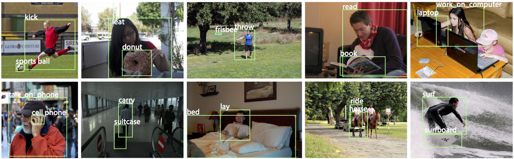

Detecting and Recognizing Human-Object Interactions |
| Georgia Gkioxari, Ross Girshick, Piotr Dollàr, Kaiming He |

To understand the visual world, a machine must not only recognize individual object instances but also how they interact. Humans are often at the center of such interactions and detecting human-object interactions is an important practical and scientific problem. In this paper, we address the task of detecting 〈human, verb, object〉 triplets in challenging everyday photos. We propose a novel model that is driven by a human-centric approach. Our hypothesis is that the appearance of a person - their pose, clothing, action - is a powerful cue for localizing the objects they are interacting with. To exploit this cue, our model learns to predict an action-specific density over target object locations based on the appearance of a detected person. Our model also jointly learns to detect people and objects, and by fusing these predictions it efficiently infers interaction triplets in a clean, jointly trained end-to-end system we call InteractNet. We validate our approach on the recently introduced Verbs in COCO (V-COCO) dataset, where we show qualitatively and quantitatively compelling results.
| The performance in AP (%) on the V-COCO test set, based on the publicly available evaluation code. For AProle we evaluate under two scenarios, following the definition of the evaluation code. (Note that the paper contains results under scenario 1, which is the harshest evaluation scenario for AP role) |
|
APagent
average: AP = 69.23
----------------------------
hold: AP = 80.08
stand: AP = 87.96
sit: AP = 76.09
ride: AP = 74.18
walk: AP = 65.42
look: AP = 59.35
hit: AP = 87.98
eat: AP = 79.63
jump: AP = 74.67
lay: AP = 47.62
talk_on_phone: AP = 81.97
carry: AP = 64.77
throw: AP = 58.05
catch: AP = 57.05
cut: AP = 73.62
run: AP = 77.21
work_on_computer: AP = 75.69
ski: AP = 84.67
surf: AP = 93.50
skateboard: AP = 90.02
smile: AP = 62.49
drink: AP = 46.02
kick: AP = 77.49
point: AP = 1.80
read: AP = 41.58
snowboard: AP = 81.14
|
|
AProle (scenario 1)
average: AP = 40.03
----------------------------------
hold-obj: AP = 26.38
sit-instr: AP = 19.88
ride-instr: AP = 55.23
look-obj: AP = 20.20
hit-instr: AP = 62.32
hit-obj: AP = 43.32
eat-obj: AP = 32.37
eat-instr: AP = 1.97
jump-instr: AP = 45.14
lay-instr: AP = 20.99
talk_on_phone-instr: AP = 31.77
carry-obj: AP = 33.11
throw-obj: AP = 40.44
catch-obj: AP = 42.52
cut-instr: AP = 22.97
cut-obj: AP = 36.40
work_on_computer-instr: AP = 57.26
ski-instr: AP = 36.47
surf-instr: AP = 65.59
skateboard-instr: AP = 75.51
drink-instr: AP = 33.81
kick-obj: AP = 69.44
read-obj: AP = 23.85
snowboard-instr: AP = 63.85
|
|
AProle (scenario 2)
average: AP = 47.98
----------------------------------
hold-obj: AP = 39.37
sit-instr: AP = 37.93
ride-instr: AP = 58.85
look-obj: AP = 29.14
hit-instr: AP = 66.23
hit-obj: AP = 52.93
eat-obj: AP = 54.33
eat-instr: AP = 20.51
jump-instr: AP = 47.90
lay-instr: AP = 26.20
talk_on_phone-instr: AP = 36.56
carry-obj: AP = 36.78
throw-obj: AP = 43.81
catch-obj: AP = 51.76
cut-instr: AP = 27.44
cut-obj: AP = 49.10
work_on_computer-instr: AP = 61.79
ski-instr: AP = 48.06
surf-instr: AP = 68.60
skateboard-instr: AP = 77.66
drink-instr: AP = 35.24
kick-obj: AP = 78.62
read-obj: AP = 32.87
snowboard-instr: AP = 69.42
|
Contact: Georgia Gkioxari